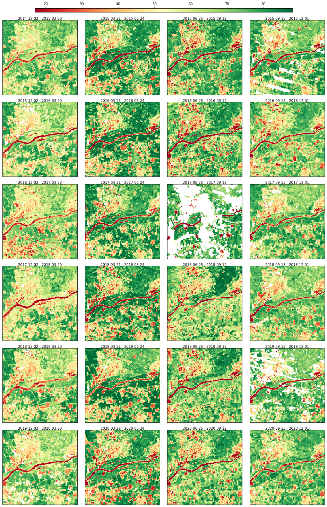
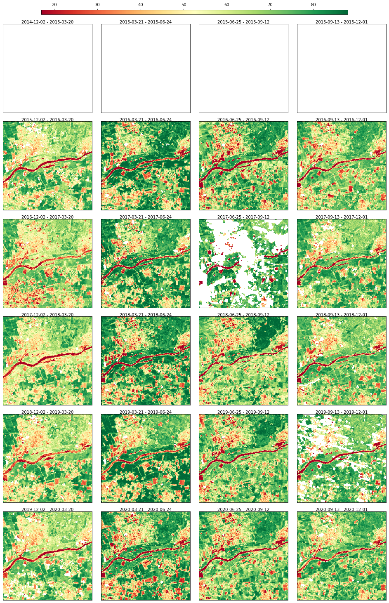
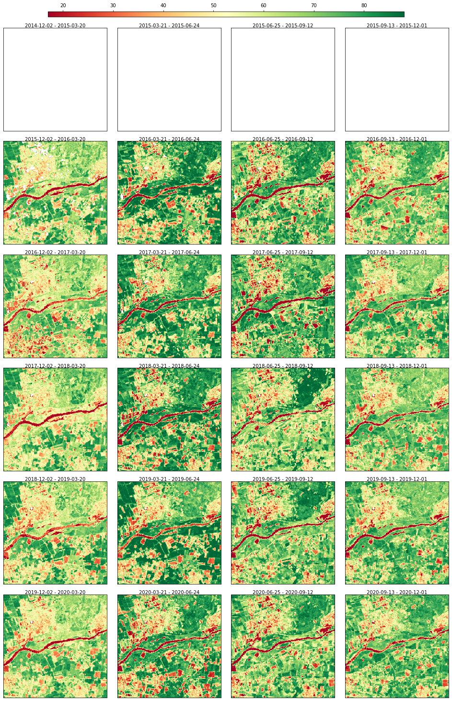
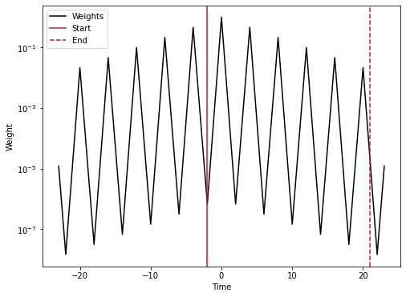
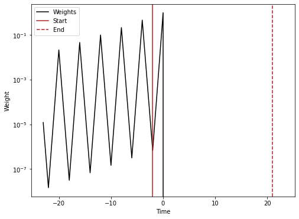

3. Raster Data#
In scikit-map, the class RasterData is responsible for implement reading, processing and writing operations. The library provides a NDVI toy dataset that you can access by:
[8]:
import matplotlib.pyplot as plt
import sys
import numpy as np
import os
sys.path.insert(0, os.path.abspath("../../"))
from skmap.data import toy
rdata = toy.ndvi_rdata(gappy=True)
False
[14:20:29] RasterData with 24 rasters (band: 1) and 1 group(s)
[14:20:29] Reading 24 raster file(s) using 4 workers
[14:20:29] Read array shape: (256, 256, 24)
The data can be visualized through a static plot
[9]:
rdata.plot(cmap="RdYlGn", img_title_text="date")
[9]:

Creating artificial gap at the begeinning of the time series to check that they do not get filled in case of no future images are used
[10]:
rdata.array[:, :, 0:4] = np.nan
rdata.plot(cmap="RdYlGn", img_title_text="date")
[10]:

Gap-filling with SeasConv using only images from the past
[11]:
from skmap.io import process
import importlib
importlib.reload(process)
n_imag = rdata.array.shape[2]
seasconv = process.SeasConvFill(season_size=4)
half_conv_vect = seasconv._compute_conv_mat_row(n_imag)
conv_vect_past = half_conv_vect # default vector for the weights of the past
conv_vect_future = (
half_conv_vect * 0
) # Setting to 0 the weights for future images (the first images should stay gap)
rdata = rdata.run(
process.SeasConvFill(
season_size=4, conv_vect_past=conv_vect_past, conv_vect_future=conv_vect_future
),
drop_input=True,
)
rdata.plot(cmap="RdYlGn", img_title_text="date")
[14:20:42] Running SeasConvFill on (256, 256, 24) for ndvi group
[14:20:42] Dropping data and info for ndvi group
[14:20:42] Execution time for SeasConvFill: 0.39 segs
[11]:

Creating a vector to visualize the weights used from SeasConv
[12]:
conv_vect_plot = np.concatenate((half_conv_vect[::-1][:-1], (1,), half_conv_vect[1:]))
plt.figure(figsize=(8, 6))
t = np.arange(n_imag * 2 - 1) - n_imag + 1
ts = 2 # Index of the time series for the range to visualize
plt.semilogy(t, conv_vect_plot, "k", label="Weights")
plt.axvline(x=t[n_imag - ts - 1], color="firebrick", label="Start")
plt.axvline(x=t[2 * n_imag - ts - 2], linestyle="--", color="firebrick", label="End")
plt.legend()
plt.xlabel("Time")
plt.ylabel("Weight")
plt.savefig("weights.png", dpi=600)
plt.show()

Same but with no future images
[13]:
conv_vect_plot = np.concatenate(
(half_conv_vect[::-1][:-1], (1,), half_conv_vect[1:] * 0)
)
plt.figure(figsize=(8, 6))
t = np.arange(n_imag * 2 - 1) - n_imag + 1
ts = 2 # Index of the time series for the range to visualize
plt.semilogy(t, conv_vect_plot, "k", label="Weights")
plt.axvline(x=t[n_imag - ts - 1], color="firebrick", label="Start")
plt.axvline(x=t[2 * n_imag - ts - 2], linestyle="--", color="firebrick", label="End")
plt.legend()
plt.xlabel("Time")
plt.ylabel("Weight")
plt.savefig("weights_no_future.png", dpi=600)
plt.show()
